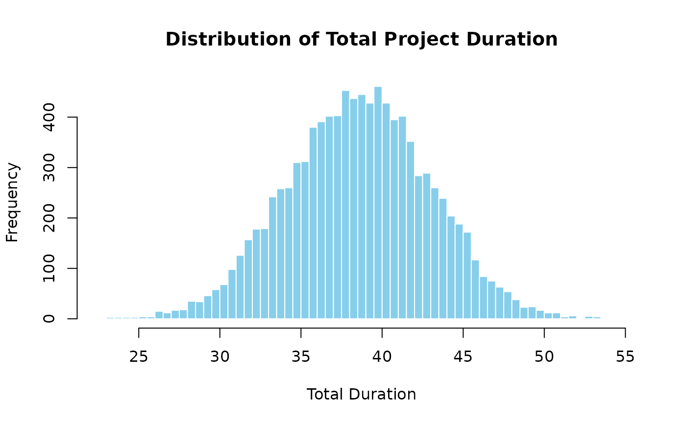

This function performs a Monte Carlo simulation to estimate the total duration of a project based on individual task distributions and an optional correlation matrix.
Arguments
- num_sims
The number of simulations to run.
- task_dists
A list of lists describing each task distribution with its parameters. Each task distribution should be specified as a list with a "type" field (indicating the distribution type: "normal", "triangular", or "uniform") and the corresponding parameters: for "normal" (mean, sd), for "triangular" (a, b, c), and for "uniform" (min, max). For example: list( list(type = "normal", mean = 10, sd = 2), list(type = "triangular", a = 5, b = 10, c = 15), list(type = "uniform", min = 8, max = 12) )
- cor_mat
The correlation matrix for the tasks (Optional). If not provided, tasks are assumed to be independent.
Value
The function returns a list of the total mean, variance, standard deviation, and percentiles for the project.
Examples
# Set the number of simulations and task distributions for a toy project.
num_sims <- 10000
task_dists <- list(
list(type = "normal", mean = 10, sd = 2), # Task A: Normal distribution
list(type = "triangular", a = 5, b = 10, c = 15), # Task B: Triangular distribution
list(type = "uniform", min = 8, max = 12) # Task C: Uniform distribution
)
# Set the correlation matrix for the correlations between tasks.
cor_mat <- matrix(c(
1, 0.5, 0.3,
0.5, 1, 0.4,
0.3, 0.4, 1
), nrow = 3, byrow = TRUE)
# Run the Monte Carlo sumulation and print the results.
results <- mcs(num_sims, task_dists, cor_mat)
cat("Mean Total Duration:", results$total_mean, "\n")
#> Mean Total Duration: 38.60858
cat("Variance of Total Variance:", results$total_variance, "\n")
#> Variance of Total Variance: 20.23917
cat("Standard Deviation of Total Duration:", results$total_sd, "\n")
#> Standard Deviation of Total Duration: 4.498796
cat("5th Percentile:", results$percentiles[1], "\n")
#> 5th Percentile: 31.31465
cat("Median (50th Percentile):", results$percentiles[2], "\n")
#> Median (50th Percentile): 38.59479
cat("95th Percentile:", results$percentiles[3], "\n")
#> 95th Percentile: 46.05187
hist(results$total_distribution,
breaks = 50, main = "Distribution of Total Project Duration",
xlab = "Total Duration", col = "skyblue", border = "white"
)
legend("topright", legend = c("Total Duration Distribution"), fill = c("skyblue"))
